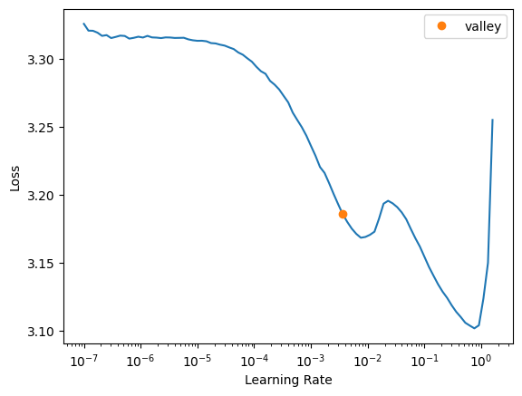
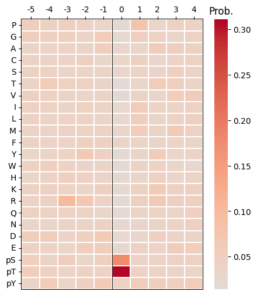

seed_everything()Train DL
Deep neural nets for PSSM
Setup
Utils
seed_everything
seed_everything (seed=123)
def_device'cuda'Load Data
# df=pd.read_parquet('paper/kinase_domain/train/pspa_t5.parquet')# info=Data.get_kinase_info()
# info = info[info.pseudo=='0']
# info = info[info.kd_ID.notna()]
# subfamily_map = info[['kd_ID','subfamily']].drop_duplicates().set_index('kd_ID')['subfamily']
# pspa_info = pd.DataFrame(df.index.tolist(),columns=['kinase'])
# pspa_info['subfamily'] = pspa_info.kinase.map(subfamily_map)
# splits = get_splits(pspa_info, group='subfamily',nfold=5)
# split0 = splits[0]GroupKFold(n_splits=5, random_state=None, shuffle=False)
# subfamily in train set: 120
# subfamily in test set: 29# df=df.reset_index()# df.columnsIndex(['index', '-5P', '-4P', '-3P', '-2P', '-1P', '0P', '1P', '2P', '3P',
...
'T5_1014', 'T5_1015', 'T5_1016', 'T5_1017', 'T5_1018', 'T5_1019',
'T5_1020', 'T5_1021', 'T5_1022', 'T5_1023'],
dtype='object', length=1255)# # column name of feature and target
# feat_col = df.columns[df.columns.str.startswith('T5_')]
# target_col = df.columns[~df.columns.isin(feat_col)][1:]# feat_colIndex(['T5_0', 'T5_1', 'T5_2', 'T5_3', 'T5_4', 'T5_5', 'T5_6', 'T5_7', 'T5_8',
'T5_9',
...
'T5_1014', 'T5_1015', 'T5_1016', 'T5_1017', 'T5_1018', 'T5_1019',
'T5_1020', 'T5_1021', 'T5_1022', 'T5_1023'],
dtype='object', length=1024)# target_colIndex(['-5P', '-4P', '-3P', '-2P', '-1P', '0P', '1P', '2P', '3P', '4P',
...
'-5pY', '-4pY', '-3pY', '-2pY', '-1pY', '0pY', '1pY', '2pY', '3pY',
'4pY'],
dtype='object', length=230)Dataset
GeneralDataset
GeneralDataset (df, feat_col, target_col=None, A:int=23, dtype=<class 'numpy.float32'>)
*An abstract class representing a :class:Dataset.
All datasets that represent a map from keys to data samples should subclass it. All subclasses should overwrite :meth:__getitem__, supporting fetching a data sample for a given key. Subclasses could also optionally overwrite :meth:__len__, which is expected to return the size of the dataset by many :class:~torch.utils.data.Sampler implementations and the default options of :class:~torch.utils.data.DataLoader. Subclasses could also optionally implement :meth:__getitems__, for speedup batched samples loading. This method accepts list of indices of samples of batch and returns list of samples.
.. note:: :class:~torch.utils.data.DataLoader by default constructs an index sampler that yields integral indices. To make it work with a map-style dataset with non-integral indices/keys, a custom sampler must be provided.*
| Type | Default | Details | |
|---|---|---|---|
| df | |||
| feat_col | list/Index of feature columns (e.g., 100 cols) | ||
| target_col | NoneType | None | list/Index of flattened PSSM cols; AA-first; A=23 |
| A | int | 23 | |
| dtype | type | float32 |
# # dataset
# ds = GeneralDataset(df,feat_col,target_col)# len(ds)368# dl = DataLoader(ds, batch_size=64, shuffle=True)# xb,yb = next(iter(dl))
# xb.shape,yb.shape(torch.Size([64, 1024]), torch.Size([64, 23, 10]))Models
MLP
MLP
MLP (num_features, num_targets, hidden_units=[512, 218], dp=0.2)
# n_feature = len(feat_col)
# n_target = len(target_col)# model = MLP(n_feature, n_target)# model(xb)tensor([[-0.6386, 0.6025, -0.5043, ..., 0.4508, 0.6506, 0.4236],
[ 0.6917, -0.3774, 0.4275, ..., -0.2647, -0.5108, 0.2595],
[ 0.0525, 0.5919, -0.6559, ..., 0.2015, 0.1638, -0.0517],
...,
[ 0.2075, 0.2489, 0.0794, ..., 0.0141, -0.0182, 0.0464],
[-0.2573, 0.9761, -1.6474, ..., 0.5026, 0.4576, 0.5259],
[-0.0075, 0.6411, -0.4033, ..., 0.6004, 0.4007, -0.1181]],
grad_fn=<AddmmBackward0>)CNN1D
init_weights
init_weights (m, leaky=0.0)
Initiate any Conv layer with Kaiming norm.
lin_wn
lin_wn (ni, nf, dp=0.1, act=<class 'torch.nn.modules.activation.SiLU'>)
Weight norm of linear.
conv_wn
conv_wn (ni, nf, ks=3, stride=1, padding=1, dp=0.1, act=<class 'torch.nn.modules.activation.ReLU'>)
Weight norm of conv.
CNN1D
CNN1D (ni, nf, amp_scale=16)
*Base class for all neural network modules.
Your models should also subclass this class.
Modules can also contain other Modules, allowing them to be nested in a tree structure. You can assign the submodules as regular attributes::
import torch.nn as nn
import torch.nn.functional as F
class Model(nn.Module):
def __init__(self) -> None:
super().__init__()
self.conv1 = nn.Conv2d(1, 20, 5)
self.conv2 = nn.Conv2d(20, 20, 5)
def forward(self, x):
x = F.relu(self.conv1(x))
return F.relu(self.conv2(x))Submodules assigned in this way will be registered, and will also have their parameters converted when you call :meth:to, etc.
.. note:: As per the example above, an __init__() call to the parent class must be made before assignment on the child.
:ivar training: Boolean represents whether this module is in training or evaluation mode. :vartype training: bool*
# model = CNN1D(n_feature,n_target).apply(init_weights)# model(xb).shapetorch.Size([64, 230])Wrapper
PSSM_model
PSSM_model (n_features, n_targets, model='MLP')
*Base class for all neural network modules.
Your models should also subclass this class.
Modules can also contain other Modules, allowing them to be nested in a tree structure. You can assign the submodules as regular attributes::
import torch.nn as nn
import torch.nn.functional as F
class Model(nn.Module):
def __init__(self) -> None:
super().__init__()
self.conv1 = nn.Conv2d(1, 20, 5)
self.conv2 = nn.Conv2d(20, 20, 5)
def forward(self, x):
x = F.relu(self.conv1(x))
return F.relu(self.conv2(x))Submodules assigned in this way will be registered, and will also have their parameters converted when you call :meth:to, etc.
.. note:: As per the example above, an __init__() call to the parent class must be made before assignment on the child.
:ivar training: Boolean represents whether this module is in training or evaluation mode. :vartype training: bool*
# model = PSSM_model(n_feature,n_target)# logits= model(xb)# logits.shapetorch.Size([64, 23, 10])# def get_mlp(): return PSSM_model(n_feature,n_target,model='MLP')
# def get_cnn(): return PSSM_model(n_feature,n_target,model='CNN')Loss
CE
CE (logits:torch.Tensor, target_probs:torch.Tensor)
Cross-entropy with soft labels. logits: (B, 20, 10) target_probs: (B, 20, 10), each column (over AA) sums to 1
# CE(logits,yb)tensor(3.2424, grad_fn=<MeanBackward0>)Metrics
KLD
KLD (logits:torch.Tensor, target_probs:torch.Tensor)
*KL divergence between target_probs (p) and softmax(logits) (q).
logits: (B, 20, 10) target_probs: (B, 20, 10), each column (over AA) sums to 1*
# KLD(logits,yb)tensor(0.5011, grad_fn=<MeanBackward0>)JSD
JSD (logits:torch.Tensor, target_probs:torch.Tensor)
*Jensen-Shannon Divergence between target_probs (p) and softmax(logits) (q).
logits: (B, 20, 10) target_probs: (B, 20, 10), each column (over AA) sums to 1*
# JSD(logits,yb)tensor(0.1034, grad_fn=<MeanBackward0>)Trainer
train_dl
train_dl (df, feat_col, target_col, split, model_func, n_epoch=4, bs=32, lr=0.01, loss=<function CE>, save=None, sampler=None, lr_find=False)
A DL trainer.
| Type | Default | Details | |
|---|---|---|---|
| df | |||
| feat_col | |||
| target_col | |||
| split | tuple of numpy array for split index | ||
| model_func | function to get pytorch model | ||
| n_epoch | int | 4 | number of epochs |
| bs | int | 32 | batch size |
| lr | float | 0.01 | will be useless if lr_find is True |
| loss | function | CE | loss function |
| save | NoneType | None | models/{save}.pth |
| sampler | NoneType | None | |
| lr_find | bool | False | if true, will use lr from lr_find |
# target, pred = train_dl(df,
# feat_col,
# target_col,
# split0,
# model_func=get_cnn,
# n_epoch=1,
# lr = 3e-3,
# lr_find=True,
# save = 'test')
SuggestedLRs(valley=0.00363078061491251)
lr in training is SuggestedLRs(valley=0.00363078061491251)| epoch | train_loss | valid_loss | KLD | JSD | time |
|---|---|---|---|---|---|
| 0 | 3.147446 | 3.038438 | 0.318980 | 0.071486 | 00:00 |
# pred| -5P | -4P | -3P | -2P | -1P | 0P | 1P | 2P | 3P | 4P | ... | -5pY | -4pY | -3pY | -2pY | -1pY | 0pY | 1pY | 2pY | 3pY | 4pY | |
|---|---|---|---|---|---|---|---|---|---|---|---|---|---|---|---|---|---|---|---|---|---|
| 14 | 0.051638 | 0.042721 | 0.047461 | 0.041219 | 0.033932 | 0.018915 | 0.077473 | 0.034604 | 0.045717 | 0.041970 | ... | 0.036053 | 0.056273 | 0.031747 | 0.048270 | 0.061980 | 0.046331 | 0.054140 | 0.053547 | 0.048135 | 0.059772 |
| 15 | 0.051626 | 0.042801 | 0.047456 | 0.041166 | 0.034053 | 0.018975 | 0.077170 | 0.034668 | 0.045690 | 0.042009 | ... | 0.035993 | 0.056192 | 0.031686 | 0.048179 | 0.061937 | 0.046108 | 0.053993 | 0.053433 | 0.048049 | 0.059777 |
| 16 | 0.051641 | 0.042793 | 0.047463 | 0.041167 | 0.034072 | 0.018973 | 0.077176 | 0.034652 | 0.045694 | 0.042008 | ... | 0.035997 | 0.056190 | 0.031682 | 0.048167 | 0.061924 | 0.046074 | 0.053964 | 0.053437 | 0.048047 | 0.059765 |
| 36 | 0.051615 | 0.042611 | 0.047080 | 0.041040 | 0.034041 | 0.018777 | 0.077937 | 0.034638 | 0.045706 | 0.041972 | ... | 0.036068 | 0.056490 | 0.031812 | 0.048282 | 0.062101 | 0.045894 | 0.054315 | 0.053463 | 0.048288 | 0.059904 |
| 37 | 0.051693 | 0.042929 | 0.047477 | 0.041184 | 0.034156 | 0.018997 | 0.077338 | 0.034726 | 0.045655 | 0.042012 | ... | 0.035987 | 0.056114 | 0.031603 | 0.048077 | 0.061846 | 0.046072 | 0.053757 | 0.053384 | 0.047950 | 0.059570 |
| ... | ... | ... | ... | ... | ... | ... | ... | ... | ... | ... | ... | ... | ... | ... | ... | ... | ... | ... | ... | ... | ... |
| 340 | 0.051463 | 0.042745 | 0.047294 | 0.041089 | 0.034083 | 0.019065 | 0.077317 | 0.034702 | 0.046079 | 0.042078 | ... | 0.036065 | 0.056231 | 0.031961 | 0.048298 | 0.061863 | 0.047434 | 0.054065 | 0.053318 | 0.048310 | 0.059943 |
| 348 | 0.051470 | 0.042849 | 0.047324 | 0.041169 | 0.034008 | 0.019065 | 0.077173 | 0.034711 | 0.045994 | 0.042123 | ... | 0.036031 | 0.056180 | 0.031971 | 0.048263 | 0.061977 | 0.047308 | 0.054164 | 0.053355 | 0.048320 | 0.059924 |
| 354 | 0.051433 | 0.042782 | 0.047271 | 0.041186 | 0.034024 | 0.019104 | 0.077271 | 0.034715 | 0.045971 | 0.042089 | ... | 0.036032 | 0.056207 | 0.032021 | 0.048299 | 0.061972 | 0.047766 | 0.054218 | 0.053410 | 0.048319 | 0.059949 |
| 356 | 0.051309 | 0.042509 | 0.047054 | 0.041165 | 0.034242 | 0.019028 | 0.077537 | 0.034745 | 0.046062 | 0.042151 | ... | 0.035995 | 0.056161 | 0.031950 | 0.048345 | 0.061846 | 0.047154 | 0.054128 | 0.053405 | 0.047976 | 0.059789 |
| 360 | 0.051457 | 0.042792 | 0.047258 | 0.041206 | 0.034020 | 0.019108 | 0.077283 | 0.034738 | 0.045946 | 0.042075 | ... | 0.036040 | 0.056208 | 0.032032 | 0.048276 | 0.061980 | 0.047821 | 0.054200 | 0.053409 | 0.048339 | 0.059919 |
74 rows × 230 columns
# pred_pssm = recover_pssm(pred.iloc[0])
# pred_pssm.sum()Position
-5 1.0
-4 1.0
-3 1.0
-2 1.0
-1 1.0
0 1.0
1 1.0
2 1.0
3 1.0
4 1.0
dtype: float32Predict
predict_dl
predict_dl (df, feat_col, target_col, model_func, model_pth)
Predict dataframe given a deep learning model
| Details | |
|---|---|
| df | |
| feat_col | |
| target_col | |
| model_func | model architecture |
| model_pth | only name, not with .pth |
# test = df.loc[split0[1]].copy()# test_pred = predict_dl(test,
# feat_col,
# target_col,
# model_func=get_cnn, # model architecture
# model_pth='test', # only name, not with .pth
# )# test_pred.columnsIndex(['-5P', '-4P', '-3P', '-2P', '-1P', '0P', '1P', '2P', '3P', '4P',
...
'-5pY', '-4pY', '-3pY', '-2pY', '-1pY', '0pY', '1pY', '2pY', '3pY',
'4pY'],
dtype='object', length=230)# pssm_pred = recover_pssm(test_pred.iloc[0])
# pssm_pred.sum()Position
-5 1.0
-4 1.0
-3 1.0
-2 1.0
-1 1.0
0 1.0
1 1.0
2 1.0
3 1.0
4 1.0
dtype: float32# plot_heatmap(pssm_pred)
CV train
cross-validation
train_dl_cv
train_dl_cv (df, feat_col, target_col, splits, model_func, save:str=None, **kwargs)
| Type | Default | Details | |
|---|---|---|---|
| df | |||
| feat_col | |||
| target_col | |||
| splits | list of tuples | ||
| model_func | functions like lambda x: return MLP_1(num_feat, num_target) | ||
| save | str | None | |
| kwargs | VAR_KEYWORD |
# oof = train_dl_cv(df,feat_col,target_col,
# splits = splits,
# model_func = get_cnn,
# n_epoch=1,lr=3e-3,save='cnn')------fold0------
lr in training is 0.003| epoch | train_loss | valid_loss | KLD | JSD | time |
|---|---|---|---|---|---|
| 0 | 3.136976 | 3.053134 | 0.333676 | 0.075223 | 00:00 |
------fold1------
lr in training is 0.003| epoch | train_loss | valid_loss | KLD | JSD | time |
|---|---|---|---|---|---|
| 0 | 3.116230 | 2.985299 | 0.230389 | 0.051941 | 00:00 |
------fold2------
lr in training is 0.003| epoch | train_loss | valid_loss | KLD | JSD | time |
|---|---|---|---|---|---|
| 0 | 3.126288 | 2.993812 | 0.241427 | 0.059246 | 00:00 |
------fold3------
lr in training is 0.003| epoch | train_loss | valid_loss | KLD | JSD | time |
|---|---|---|---|---|---|
| 0 | 3.097305 | 3.008505 | 0.245488 | 0.061335 | 00:00 |
------fold4------
lr in training is 0.003| epoch | train_loss | valid_loss | KLD | JSD | time |
|---|---|---|---|---|---|
| 0 | 3.120687 | 3.022246 | 0.272693 | 0.061717 | 00:00 |
# oof.nfold.value_counts()nfold
2 74
1 74
0 74
3 73
4 73
Name: count, dtype: int64